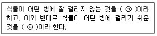

식물보호산업기사 (2016-10-01 기출문제)
1과목: 식물병리학
1. 토마토 잎곰팡이병을 발생시키는 병원균은?
- Fulvia fulva
- Fusarium solani
- Alternaria alternata
- Agrobacterium tumefaciens
(정답률: 70%)

2. 오이 노균병에 대한 설명으로 옳은 것은?
- 세균에 의해 발생한다.
- 주로 줄기에 발생한다.
- 질소질 성분이 부족할 경우 잘 발생한다.
- 시설재배보다 노지재배할 경우 피해가 더 크다.
(정답률: 73%)
3. 무성포자에 해당하는 것은?
- 난포자
- 분생포자
- 자낭포자
- 담자포자
(정답률: 80%)
4. 식물병 진단에 이용하기 위하여 특정병원체의 침입에 민감하게 반응하는 식물로서 주로 바이러스병 진단에 많이 사용되는 것은?
- 지표식물
- 표적식물
- 진단식물
- 실험식물
(정답률: 87%)
5. 모래땅이나 유기질이 적은 논에서 발생하기 쉬운 병은?
- 벼 도열병
- 벼 키다리병
- 벼 흰잎마름병
- 벼 깨씨무늬병
(정답률: 69%)
6. 과수 뿌리혹병의 생물적 방제에 이용되는 균은?
- Aspergillus niger
- Aspergillus nidulans
- Agrobacterium tumefaciens
- Agrobacterium radiobacter
(정답률: 84%)
7. 파종기를 늦추어 감수성 품종의 병 발생을 막았다면 이것은 무엇을 이용한 방제방법인가?
- 내성
- 회피
- 면역성
- 저항성
(정답률: 95%)
8. 가지 풋마름병의 병원체는?
- 세균
- 균류
- 바이러스
- 생리적 용인
(정답률: 82%)
9. 기주범위가 좁고 기주가 없으면 오래 생존하지 못하고 쉽게 사멸하는 병원균의 방제방법으로 효과적인 것은?
- 윤작
- 접목
- 멀칭
- 연작
(정답률: 84%)
10. 물에 의해 전반되는 식물 병원체가 아닌 것은?
- 세균
- 선충
- 균류
- 바이러스
(정답률: 73%)
11. 균류에 속하는 식물병균 중 순활물기생균이 아닌 것은?
- 녹병균
- 노균병균
- 흰가루병균
- 잿빛곰팡이병균
(정답률: 73%)
12. 파이토알렉신(Phytoalexin)에 대한 설명으로 옳은 것은?
- 병원균이 분비한다.
- 병원체의 발육을 촉진하는 물질이다.
- 기주와 균의 상호작용에 의하여 생긴다.
- 생산되 파이토알렉신의 종류는 식물의 종과는 관계없이 균의 종류에 따라 결정된다.
(정답률: 79%)
13. 식물병과 중간기주를 바르게 연결한 것은?
- 소나무 혹병 - 쑥부쟁이
- 잣나무 털녹병 - 송이풀
- 포플러 잎녹병 - 향나무
- 사과나무 붉은별무늬병 - 포플러류
(정답률: 88%)
14. 맥류의 흰가루병에 대한 설명으로 옳지 않은 것은?
- 자낭균에 의해 발병한다.
- 내품성 품종을 재배하여 방제한다.
- 4~5월경에 발생하여 수확기에 심하게 발생한다.
- 잎에만 발생하고 잎집이나 줄기에는 발생하지 않는다.
(정답률: 91%)
15. 세균성 식물병의 진단방법에 해당하지 않는 것은?
- 유출검사에 의한 진단
- 즙액접종에 의한 진단
- 괴경지표법에 의한 진단
- 파지(Phage)에 의한 진단
(정답률: 61%)
16. 대추나무 빗자루병에 대한 설명으로 옳은 것은? (문제오류로 인하여 실제 시험에서는 1, 2, 4번이 정답처리 되었습니다. 여기서는 1번을 누르면 정답 처리됩니다.)
- 마름무늬매미충에 의해 전염된다.
- 파이토플라스마에 의해 발병한다.
- 분주에 의해서는 전염되지 않는다.
- 병든 나무의 꽃은 염화현상이 나타나 열매가 열리지 않는다.
(정답률: 90%)
17. 일반적으로 세균이 침입할 수 없는 부위는?
- 기공
- 각피
- 수공
- 상처
(정답률: 90%)
18. 배추 무사마귀병에 대한 설명으로 옳지 않은 것은?
- 한낮에는 시들음 증상을 보인다.
- 뿌리의 세포가 비정상적으로 커진다.
- 토양이 산성인 경우 잘 발생하지 않는다.
- 우리나라에서는 주로 배추, 양배추, 무, 갓 등에 많이 발생한다.
(정답률: 91%)
19. 다음 설명에서 괄호 안에 들어갈 용어로 옳은 것은?

- ㉠ : 저항성, ㉡ : 감수성
- ㉠ : 저항성, ㉡ : 친화성
- ㉠ : 감수성, ㉡ : 저항성
- ㉠ : 감수성, ㉡ : 친화성
(정답률: 95%)
20. 세균에 의해 발생하는 병이 아닌 것은?
- 감귤 궤양병
- 포플러 잎녹병
- 배나무 불마름병
- 사과나무 뿌리혹병
(정답률: 65%)
2과목: 농림해충학
21. 해충의 생태적 방제방법으로 옳지 않은 것은?
- 윤작 실시
- 포장위생 실시
- 재배시기 조절
- 길항식물 재배
(정답률: 60%)
22. 뽕나무하늘소에 대한 설명으로 옳지 않은 것은?
- 사과나무, 배나무에도 피해를 준다.
- 성충이 과실을 물어뜯고 즙액을 빨아먹는다.
- 다 자란 유충은 나뭇잎 뒷면에서 번데기가 된다.
- 유충이 나무줄기 속으로 구멍을 뚫고 들어간다.
(정답률: 64%)
23. 미생물 살충제에 대한 설명으로 옳지 않은 것은?
- 해충에 대하여 기주 특이적으로 작용한다.
- 환경변화에 대하여 비교적 안정성이 높다.
- 침입해충에 대하여 높은 독성이 지니고 있다.
- 자외선과 열 같은 물리적 요소에 크게 영향을 받지 않는다.
(정답률: 75%)
24. 완전변태를 하는 것은?
- 벌
- 메뚜기
- 진딧물
- 잠자리
(정답률: 87%)
25. 솔잎혹파리의 월동에 대한 설명으로 옳은 것은?
- 성충으로 땅속에서 월동한다.
- 유충으로 땅속에서 월동한다.
- 성충이 혹을 만들어 그 안에서 월동한다.
- 유충이 혹을 만들어 그 안에서 월동한다.
(정답률: 51%)
26. 해충발생밀도 조사방법에 해당하지 않는 것은?
- 수반조사법
- 예찰등조사법
- 해충가해조사법
- 공중포충망조사법
(정답률: 74%)
27. 날개가 1쌍인 해충은?
- 하늘소
- 나방파리
- 호랑나비
- 나나니벌
(정답률: 76%)
28. 꽃바구미의 발육영점온도는 10℃이고 알에서부터 성충까지의 유효적산온도가 250℃일 때 20℃ 인큐베이터에 오늘 알을 넣으면 언제 성충이 되는가?
- 10일 후
- 15일 후
- 20일 후
- 25일 후
(정답률: 74%)
29. 알의 양쪽에 공기주머니가 붙어 있는 해충은?
- 솔나방
- 무당벌레
- 학질모기
- 이화명나방
(정답률: 78%)
30. 어떤 곤충에 다른 작은 곤충이 붙어있는 것으로 외부기생충이 아닌 단순한 편리공생인 경우에 해당하는 것은?
- 편승
- 먹이 탐색
- 구애 행동
- 도둑 기생
(정답률: 80%)
31. 곤충의 피부구조에 대한 설명으로 옳지 않은 것은?
- 기저막은 일정한 모양이 형성된 비세포성 연결조직이다.
- 외표피는 단백질과 지질로 구성된 얇은 층으로 되어있다.
- 원표피는 성층표피의 대부분을 차지하며, 외원표피와 내원표피로 구성된다.
- 진피세포는 표리를 이루는 단백질, 지질, 키틴 화합물 등을 합성 및 분비하는 세포균이다.
(정답률: 66%)
32. 소화와 흡수가 주로 이루어지는 기관은?
- 결장
- 중장
- 전장
- 모이주머니
(정답률: 86%)
33. 단위생식으로 번식하는 해충이 아닌 것은?
- 밤나무혹벌
- 벼물바구미
- 미국선녀벌레
- 복숭아혹진딧물
(정답률: 68%)
34. 흡즙성 해충에 해당하는 것은?
- 포플러하늘소
- 미국흰불나방
- 오리나무잎벌레
- 주머니깍지벌레
(정답률: 60%)
35. 곤충의 호르몬에 대한 설명으로 옳지 않은 것은?
- 이뇨호르몬은 지질 동원에 관여한다.
- 유약호르몬은 성장 조절에 관여한다.
- 경화호르몬은 탈피 후 표피의 경화에 영향을 준다.
- 앞가슴샘에서 분비되는 호르몬은 탈피에 영향을 준다.
(정답률: 75%)
36. 곤충의 주성에 해당하지 않는 것은?
- 주광성
- 주랭성
- 주촉성
- 주화성
(정답률: 87%)
37. 깍지벌레가 속하는 목은?
- 이목
- 노린재목
- 총채벌레목
- 부채벌레목
(정답률: 72%)
38. 말피기소관에 대한 설명으로 옳지 않은 것은?
- 진딧물은 말피기소관이 없다.
- 후장의 시작 부분에 붙어있다.
- 끝이 막혀 있는 큰 원통형 모양이다.
- 몸에서 발생한 함질소 노폐물 등을 체액으로부터 걸러준다.
(정답률: 68%)
39. 페로몬에 대한 설명으로 옳지 않은 것은?
- 카이로몬, 알로몬, 시노몬 등이 있다.
- 짝짓기를 위한 암수의 통신에 관여한다.
- 사회성을 유지하거나 개체들을 모이게 한다.
- 적으로부터 피하거나 방어를 위한 신호를 보내는데 사용한다.
(정답률: 70%)
40. 딱정벌레목에 대한 설명으로 옳지 않은 것은?
- 앞날개는 매우 두껍다.
- 성충은 외골격이 매우 발달되었다.
- 앞날개 밑에 얇은 뒷날개가 접혀 있다.
- 번데기는 피용이고 대개 고치를 짓지 않는다.
(정답률: 80%)
3과목: 농약학
41. 독성 정도에 따른 농약의 구분에서 고체 급성경구 1급(맹독성)의 기준치(mg/kg 체중)는?
- 0.⑤ 미만
- 0.5 미만
- 5 미만
- 50 미만
(정답률: 60%)
42. 곡물용 훈증제로 주로 사용되며, 인체에 독성이 강하므로 세심한 주의를 요하는 약제는?
- EDB
- 아조벤젠
- 이황화탄소
- 메틸브로마이드
(정답률: 75%)
43. 아조포 유제를 500배로 희석하여 살포하려고 할 때 물 1말 (18L)에 필요한 약량은 몇 mL인가?
- 18
- 20
- 36
- 72
(정답률: 81%)
44. 농약의 어독성에 영향을 미치는 요인으로 가장 거리가 먼 것은?
- 생물의 종류
- 생육상태
- 농약의 형태
- 농약관리제도
(정답률: 72%)
45. 무기농약인 석회황합제의 제조 및 사용법에 대한 설명으로 틀린 것은?
- 생석회와 황을 2:1의 중량비로 배합하여 가마솥에 넣고 일정량의 물과 온도하에 가열반응시켜 숙성 후에 여과하여 만든다.
- 약제 조제용 그릇은 금속제를 피하고 나무통을 사용하고 분무기는 약제 사용 후 암모니아수나 초산액으로 씻은 다음 물로 씻어 보관한다.
- PCP, 황산니코틴, 황산아연 등과 혼용해도 무방하지만 유기인제, 제충국제와는 혼용을 피하는 것이 좋다.
- 공기와 접촉하게 되면 분해가 촉진되기 때문에 저장할 때는 공기와의 접촉을 막아야 한다.
(정답률: 70%)
46. 분제의 특징에 대한 설명으로 옳지 않은 것은?
- 살충, 살균제에 많이 사용된다.
- 고착성이 우수하여 잔효성이 요구뒤는 과수방제용으로 적당하다.
- 수도 병해충방제에 널리 사용되고 있다.
- 표류비산에 의한 살포구역 이외의 환경오염이 클 수 있다.
(정답률: 68%)
47. 2,4-D 산의 형태 중 작용력이 가장 커 물이 채워져 있는 논에 그대로 처리하여도 효과가 큰 것은?
- 에스테르형
- 소다형
- 암모늄형
- 아민형
(정답률: 67%)
48. 클러버 등 광역잡초에는 특이한 살초효과가 있으나 피 등과 같은 화본과잡초에는 효과가 없는 호르몬형 이행성 제초제는?
- Dicamba
- Dymuron
- Glyphosate
- Molinate
(정답률: 75%)
49. 농약안전사용기준을 설정한 목적으로 가장 잘 설명한 것은?
- 농산물 중 잔류농약에 대한 안정성을 향상시키기 위하여
- 농약 살포액 조제시 농민의 안정성을 확보하기 위하여
- 농약 살포시 작업자의 중독 예방을 위하여
- 농약 살포에 따른 작물의 약해 방지를 위하여
(정답률: 65%)
50. 광역잡초 생육기 경엽처리용 제초제로서 잡초가 발생한 시기에 사용할 수 있어 사용폭이 넓고 화본과잡초를 제외한 일년생 및 다년생 광역잡초와 사초과 잡초에 효과가 있는 약제는?
- MCPB
- Butachlor
- Bentazone
- Benthiocarb
(정답률: 67%)
51. 동일 분자 내에 친수성기와 소수성기를 가진 화합물은?
- 안정제
- 중량제
- 용제
- 계면활성제
(정답률: 82%)
52. 유기비소제에 대한 설명으로 틀린 것은?
- 일반식은 R·AS·X2로 표시된다.
- 유기비소제 Thiram은 농용항생제로 개발되었다.
- 벼의 잎집무늬마름병과 사과의 부란병에 효과적이다.
- Meozin은 유기비소제에 철을 결합시킨 것으로 문제를 해결한 약제이다.
(정답률: 59%)
53. 농약의 물리적 성질 중 습전성을 가장 잘 설명한 것은?
- 살포한 약액이 작물이나 해충의 표면에 잘 적시고 퍼지는 성질을 말한다.
- 약제와 물과의 친화도를 나타내는 성질을 말한다.
- 약제는 물에 가했을 때 입자가 균일하게 부유, 분산하는 성질을 말한다.
- 부착한 약제가 이슬이나 빗물에 씻겨 내려가지 않고 식물체의 표면에 붙어있는 성질을 말한다.
(정답률: 87%)
54. 농약 혼용의 장점이 아닌 것은?
- 방제 비용이 절감된다.
- 혼용가능 농약은 혼합 후 바로 사용하지 않아도 좋다.
- 같은 약제 연용에 의한 내성의 억제 효과가 있다.
- 동시에 서로 다른 병해충의 방제가 가능하다.
(정답률: 86%)
55. 다양한 제제형태로 조제되어 적용범위가 넓고 특히 소나무의 솔잎혹파리 방제용으로 주로 적용되는 농약은?
- 오메톤
- 에토사졸
- 에토프
- 이미다클로프리드
(정답률: 75%)
56. 어류에 대한 독성은 여러 가지 요인으로 감수서에 차이가 있는데 이에 대한 설명으로 틀린 것은?
- 수온이 높으면 농약에 대한 저항성이 낮아진다.
- 독성은 제형에 따라 다른데 입제가 가장 강하다.
- 어류는 알(卵)일 때 농약에 대하여 감수성이 가장 낮다.
- 수생생물에 대한 독성은 잉어와 물벼룩으로 평가한다.
(정답률: 65%)
57. 펜프로파트린 유제를 1,000배액으로 희석하여, 10a당 140L를 분무하려고 할 때 원액 몇 mL가 필요한가?
- 70mL
- 140mL
- 280mL
- 350mL
(정답률: 85%)
58. 각종 과실의 저장성을 향상시키기 위하여 주로 사용하는 약제는?
- 6-BA
- 2,4-D
- 클로르프로팜
- 일-메틸사이클로프로펜
(정답률: 55%)
59. 수화제를 물에 풀면 물에 녹지 않은 원제나 중량제의 미립자가 균등히 분산된 살포액을 무엇이라 하는가?
- 유탁액
- 용액
- 현탁액
- 미탁액
(정답률: 72%)
60. 실응애제 농약의 작용기작이 아닌 것은?
- 단백질 합성 저해
- 신경계에 작용하여 신경기능 저해
- 생체 내 Amine 대사를 저해하는 대사 저해
- 미토콘드리아에 작용하여 에너지대사 저해
(정답률: 50%)
4과목: 잡초방제학
61. 예방적 방제수단에 해당하지 않는 것은?
- 농기계 청소
- 비산종자 관리
- 작물종자 정선
- 경엽처리제 살포
(정답률: 81%)
62. 제초제의 선택성에 관여하는 요인으로 가장 거리가 먼 것은?
- 식물체 생장점의 위치
- 식물체 생육기의 차이
- 식물체 건조 무게 차이
- 식물체 뿌리의 분포상태
(정답률: 83%)
63. 영양번식기관으로 번식하는 잡초가 아닌 것은?
- 깨풀
- 가래
- 올방개
- 너도방동사니
(정답률: 62%)
64. 벼 재배방법 중 잡초 종류와 발생량이 가장 적은 것은?
- 담수직파
- 건답직파
- 중묘 기계이앙
- 어린 모 기계이앙
(정답률: 80%)
65. 작물과 잡초의 경합에 대한 설명으로 옳지 않은 것은? (문제오류로 인하여 실제 시험에서는 1, 3번이 정답처리 되었습니다. 여기서는 1번을 누르면 정답 처리됩니다.)
- 작물은 일반적으로 잡초보다 경합에 유리한 생태적 특성을 지니고 있다.
- 종간경합은 작물과 잡초 간의 경합으로 대표적으로 벼와 피의 경합이 있다.
- 작물에 대한 잡초의 경합력은 잡초의 종류, 밀도 등에 따라 거의 일정하다.
- 종내경합은 같은 초종 중에서 개체간의 경합으로 벼와 벼, 피와 피 간 경합이 있다.
(정답률: 80%)
66. 제초제의 제형 중 유제에 대한 설명으로 옳은 것은?
- 물에 희석하면 투명한 액체가 된다.
- 원제를 기름과 혼합하여 만든 액체이다.
- 원제를 유기용매에 녹인 후 유화제를 넣어 만든 액체이다.
- 원제를 카올린, 벤토나이트 등의 분말과 혼합분쇄한 것이다.
(정답률: 80%)
67. 잡초종자의 휴면에 대한 설명으로 옳지 않은 것은?
- 배의 미숙에 의하여 휴면하기도 한다.
- 발아환경이 부적당하면 2차 휴면을 한다.
- 종자뿐만 아니라 괴경 및 지하경에서도 볼 수 있다.
- 외적요건이 발아에 부적당하여 발아하지 못하는 경우 자발휴면이라고 한다.
(정답률: 67%)
68. 월년생 잡초로만 올바르게 나열된 것은?
- 별꽃, 냉이
- 쑥, 명아주
- 깨풀, 강아지풀
- 씀바귀, 애기메꽃
(정답률: 75%)
69. 잡초의 생물적 방제법에 이용되는 생물의 구비조건이 아닌 것은?
- 비산 및 분산능력이 커야 한다.
- 번식속도가 빠르지 않아야 한다.
- 대상 잡초에만 피해를 주어야 한다.
- 환경 적응성 및 저항성을 가지고 있어야 한다.
(정답률: 79%)
70. 제초제에 사용시기에 따른 분류에서 파종전 처리제에 해당하는 것은?
- 토양 소독제
- 경엽 처리제
- 생육기 처리제
- 이앙 벼의 초기 제초제
(정답률: 67%)
71. 십자화과에 속하며, 월년생 잡초에 해당하는 것은?
- 바랭이
- 광대나물
- 벼룩나물
- 속속이풀
(정답률: 63%)
72. 우리나라 농경지 잡초 발생의 특징으로 옳은 것은?
- 남방형 잡초가 북방형 잡초보다 많다.
- 광엽잡초보다 화본과잡초의 종류가 더 많다.
- 평지의 과수원에서는 다년생 잡초가 우점한다.
- 제초제 사용이 증가하면서 논에서는 다년생 잡초보다 일년생 잡초가 많아지고 있다.
(정답률: 60%)
73. 작물과 잡초의 경합요인으로 가장 거리가 먼 것은?
- 빛
- 산소
- 수분
- 영양분
(정답률: 82%)
74. 장기간에 걸친 잡초의 생존 특성으로 옳지 않은 것은?
- 많은 종자 생산
- 종자만으로 번식
- C4 광합성 회로 이용
- 불량한 환경조건에 잘 적응
(정답률: 87%)
75. 주로 벼와 경합하는 논잡초로만 올바르게 나열된 것은?
- 돌피, 쇠뜨기
- 물피, 쇠비름
- 명아주, 나도겨풀
- 올방개, 생이가래
(정답률: 63%)
76. 개체당 종자 수가 가장 많은 잡초는?
- 별꽃
- 망초
- 마디꽃
- 알방동사니
(정답률: 74%)
77. 잡초종자에 갈고리 모양의 돌기 또는 바늘 모양의 가시를 가져서 인축에 부착되어 전파되는 것은?
- 민들레
- 진득찰
- 소리쟁이
- 가막사리
(정답률: 73%)
78. 제초제의 광분해와 가장 관계가 높은 것은?
- 자외선
- 적외선
- 가시광성
- 관계없음
(정답률: 81%)
79. 잡초종자의 발아습성에 대한 설명으로 옳지 않은 것은?
- 발아주기성이란 같은 조건에서 일정한 간격으로 발아하는 것이다.
- 준동시성 발아형이란 일정기간 이내에 집중적으로 발아하는 것이다.
- 발아계절성이란 발생 계절의 일장보다 대기온도에 반응하여 발아하는 것이다.
- 연속성 발아형이란 발아에 적합한 조건을 주어도 오랜 기간에 걸쳐 지속적으로 발아하는 것이다.
(정답률: 75%)
80. 화본과 잡초에 속하지 않는 것은?
- 피
- 쇠털골
- 뚝새풀
- 강아지풀
(정답률: 56%)